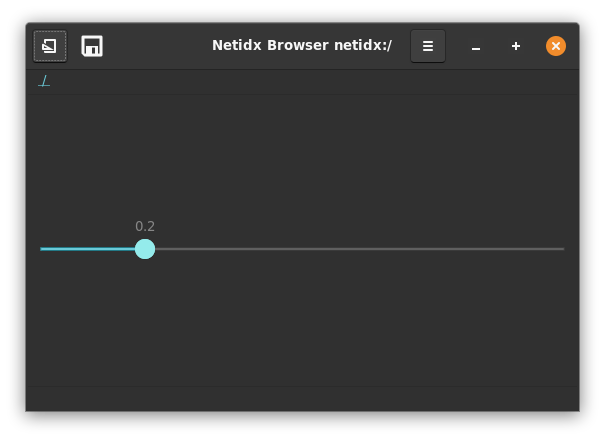

Scale

Scale visualizes a floating point number between a minimum and maximum value, and allows the user to drag the slider to change the value. It has several properties,
Direction
This static property indicates whether the slider is horizontal or vertical.
Draw Value
if true then the actual value is drawn, if false it is not.
Marks
Allows displaying marks along the scale's axis. When dragging the slider the browser will snap to the nearest mark, making these values easy to hit exactly.
[mark, ...]
mark: [<pos>, position-spec, (null | <text>)]
position-spec: ("left" | "right" | "top" | "bottom")
Example
[
[0.25, "bottom", "0.25"],
[0.5, "bottom", "0.5"],
[0.75, "bottom", "0.75"]
]
Will draw marks at 1/4, 1/2, and 3/4 along the axis on the bottom side.
Has Origin
If this propery is true then the left or top of the scale is
considered the origin, and the part from there to the handle will be
filled in.
Value
This defines the position of the handle. It must be between the minimum and maximum values.
Min
The minimum value, this defines the origin if Has Origin is true.
Max
The maximum value.
On Change
event() in this expression will yield the value of the slider
whenever the user changes it.